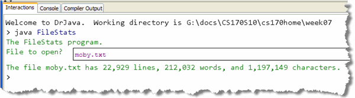
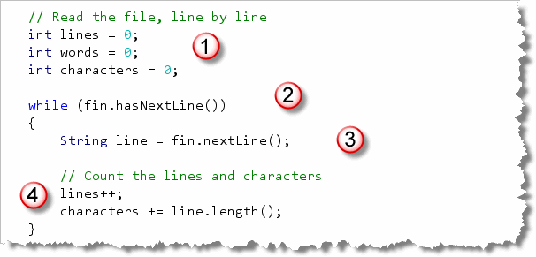
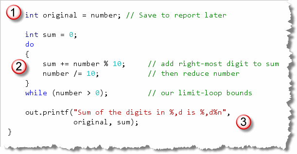
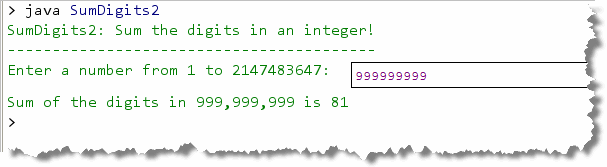

Up to now we've written counter-controlled, sentinel-controlled and flag-controlled loops. There are two last categories of loops you'll need to know how to implement: the data-bound loop and the limit-bound loop.
With a data-bound loop, instead of looking for a specific value, like we do with a sentinel, or a computed value, like we do with limit loops, we just keep going until there is no more data left.
Well, how do we tell if there is any more data left? For that, we rely on the operating system to send us a specific signal, traditionally called EOF. EOF stands for "end of file"; an EOF-controlled loop is just another name for a data-bound loop.
Introducing Iterators
 To implement a data-bound loop, you'll usually use an
iterator of some sort. An iterator is an object
that allows you to apply some operation to all of the members
of a group of related variables or objects, using a loop.
To implement a data-bound loop, you'll usually use an
iterator of some sort. An iterator is an object
that allows you to apply some operation to all of the members
of a group of related variables or objects, using a loop.
Iterators can be used to skip from cell to cell in a biological simulation, or to display an "overhead radar" of all of the objects in a game of Doom (as the illustration on the right shows.) As one textbook put it: "iterators provide a consistent and simple mechanism for systematically processing a group of items", no matter what kind of things those items might be, or how those items are stored.
Such groups of related items or variables are known as
collections, and Java has several different
types. The String class is a collection of
characters. But, in another sense, we can treat a
String as a collection of tokens. Tokens
are just meaningful sequences of characters.
In the next chapter, we'll take a look at Java's array collection type, and, then later, we'll look at the ArrayList class. If you go on in Computer Science and take a Data Structures course, you'll learn about dozens of different kinds of collections and their associated iterators.
To get started for right now, though, let's take another look
at an iterator object you've already met: the
java.util.Scanner class.
The Scanner Class
You first met the Scanner class back in
Section 3.1—Interactive Programs,
where you saw how it could be used to read input in
a "traditional" Java console program.
The Scanner class is actually much more versatile
than I've let on. Using a Scanner as an
iterator allows us to:
- process each individual word in a line of text
- read and process each line of text in a file
- read and process tokens from a network stream, such as a Web page or FTP connection
In the last chapter, (Section 7.1—Logical Operators), you
saw how you could use the logical AND and NOT
operators to count the number of words in a String.
In that section, you had to carefully monitor each character
to see if you were entering or leaving a word, and then act
accordingly.
The iterators provided by the Scanner class
will do all of that for you automatically.
Reading Tokens
To read a token using the Scanner class,
you have to do three things:
- Construct a
Scannerobject and "hook it up" with the source of the data. - Write a
whileloop that continues until you are out of data. You do that by calling theScanner hasNext()method. If you are at end-of-input (or EOF), then the method will returnfalse; otherwise it returnstrue. - Read the next word or token from the
input. You do that by calling the method
next()which returns a token, not a line of text.
The next() method returns its token as a
String with all of the delimiters
(or token-separators) removed. The "stock" version
of the Scanner uses whitespace as the delimiter,
so the token you get back will have both leading and
trailing whitespace removed.
Creating Scanner Objects
Here are a few snippets that show you how to connect a
Scanner object with different kinds of
data sources. You already saw how to connect to the
standard Java system console (System.in) like this:
Scanner cin = new Scanner(System.in);
To "read" from a String token-by-token,
either of these will work:
Scanner sin1 = new Scanner("A string literal.");
Scanner sin2 = new Scanner(str); // a String variable
To read from a file on disk, you first need to open the file. Java has a wealth of classes that allow you to do this, but, unfortunately, all of them require you to explicitly handle various error conditions, such a missing file.
You'll learn how to use Java's standard file-processing classes later in the course. For right now, though, we'll just add:
- another
importstatement to the top of our program:import java.io.File;, and then... - a bit of "magic" to our program's
main()method, adding this line to heading you've already memorized:public static void main(String[] args) throws Exception
Once you've added the import java.io.File; and
the throws Exception to the end of
the main() method header, then here's how you'd open the
text file "moby.txt" containing the text of Moby Dick:
Scanner fin = new Scanner(new File("moby.txt"));
I named this Scanner variable fin to
remind me that it's a file input, not a console
input.
Scanners in ACM Programs
Although we haven't used the Scanner class in our
ACM console programs, the ACM libraries have several methods that
allow you to hook up a Scanner to a network URL or
to a data file, as well as reading from the console window itself.
To create a Scanner that reads from the ACM
ConsoleProgram window, (instead of from the
standard input stream), you can add this line to your program:
Scanner cin = new Scanner(getReader());
To create a Scanner that reads from a data file,
you can import the acm.util package and then
use the MediaTools.openDataFile() method, like
this:
Scanner fin = new Scanner(MediaTools.openDataFile("moby.txt"));
The advantage of the using the MediaTools method,
instead of the File constructor, is that you don't
need to add throws Exception to your run()
method. (In fact, you can't; your code won't compile if you
do.
Another advantage is that if the String passed to
openDataFile() starts with http://, then
the method will try to open that Web page instead of looking
for a file of that name.
Hands-On: The FileStats Example
To see how an iterator works, let's build a
program that asks the user for the name of the file to open,
and then uses the Scanner class to loop through
the file and count them the words, lines and characters.
Start by creating a console program named FileStats.
Place it inside this chapter's code folder, where you'll
find the text file moby.txt.
Here's what the program should look like as it runs:

Here are the steps you'll need to follow to complete the program.Getting Started
Our program needs to use the Scanner class, which is
located in the java.util package and the
File class which is part of the
java.io package, which we'll need to open
the file.
Step 1 is to import those two packages,
like this:

Opening the File
Here's the code from the program that opens the file:
 The code shown here:
The code shown here:
- first adds the clause
throws Exceptionto the end of themain()method heading. Without this line, we won't be able to open the file without explicitly adding code to deal with errors. - Next, the program creates a "regular"
Scannerconnected to the console, and then asks the user for the name of the file to open. The "keyboard"Scanneris used to read the response from the user, which is stored in theStringvariable namedfilename - Finally, the method creates another
Scannerobject to process (or iterate over) the contents of file. As I did earlier, I named this objectfin, butfItr(for file iterator) is also popular. To construct theScannerobject, I need to call theFileconstructor with the name of the file to open.
Reading the File
We'll use this iterator (fin) to
process the data file a line at a time. Here's the code that
does that

Here's how it works:- Before we start reading the file, we need to create and initialize counter variables to hold the number of lines, words and characters that we encounter.
- Because this is a data-bound loop, we'll
keep going as long as there are more lines in the file.
Do that by using the iterator's
hasMoreLines()method. - Inside the loop, we actually read the
line by using the iterator's
nextLine()method and storing the result in aStringvariable. - Once we've read a line of text we can update our word and character counters.
One thing you should note
is that nextLine() does not save the
newline characters at the end of each line of text, so
the number of characters we'll report will not include those.
If it is important to have an accurate count, you can call
System.getProperty("line.separator"). This will return
a String containing the end-of-line character
for the platform you are running on. Append this to each line
as it is read and you'll have an accurate count.
Counting Words
To count the words in the file, we'll create a third
Scanner object, and use it to iterate over the
line of text that we retrieved from the file. Here's what
that code looks like:
 Here's how it works:
Here's how it works:
- The new
Scannerobject,wordItr, is constructed by passing the line of text read from the file. Notice that this iterator will be iterating over aStringinstead of a file. That's the beauty of iterators: it doesn't matter what you're looping over, the methods are the same. - Because we want to read token-by-token, we use
another data-bound
whileloop, using thehas.next()(instead ofhasNextLine()) iterator method. - Inside the loop, we read the next token (using
the
next()method. We aren't going to further examine it, so we don't bother saving it in a variable; instead, we just count the word. - Finally, after the loop, we have a regular formatted print statement displaying the statistics on our file.
When Things Go Wrong
What happens if you type in a name for a file and your
program can't find the file you've requested? Unfortunately,
the error message that is printed on the console is not
really fit for "regular users":

You can anticipate this problem, and make your program look
a little more professional, by first checking to see
if the file you want to open actually exists. You can do
that by first creating a File object using the
filename retrieved from the user, and then using its
exists() function, to make sure the filename
is valid. If it isn't valid, then you can use a return
statement like this:
 Once you know that the filename is valid, you can pass the
Once you know that the filename is valid, you can pass the
File object to the Scanner constructor.
If the file isn't found, I simply exit the program
by using a plain return statement. Since the
main() procedure is not a function it
doesn't need a return statement. If
you want to leave a procedure early, though, you can always
use a plain return with no expression following it.
Closing the File
In this program, we open a disk file and never close it.
That's a really bad habit to get into. We can close the
file by closing the Scanner object we used
to read the file in the first place.
Add this line to the end of your main() method
and all will be well:
fin.close();
Note that you don't need to close the Scanners
used to read from System.in or from the individual
lines of text.
Try It Yourself
Go ahead and complete FileStats and then use it to read the stats on itself (FileStats.java).
More on Tokens
Once each line has been extracted, the FileStats program uses a
second Scanner designed to break each line into its
individual parts, (called tokens). A token is just a "meaningful
chunk of text". Words are tokens, as are the operators, operands, and keywords
in a programming language like Java.
To define a token, you specify the characters that separate one token from
another. These are called delimiters. As I mentioned, the
default delimiters are the whitespace characters. If you want to
read your text based on a different set of tokens, though, you
can use the Scanner useDelimiter() method to change
the separator to something else.
Different Tokens
The String you supply to the useDelimiter()
method is actually a regular expression. That means you can
use some very sophisticated pattern matching when processing an
input file. One useful delimiter is the "end-of-file" regular expression.
Here is how you set this delimiter:
fin.useDelimiter("\\Z");
Now, when you call the next() method, your Scanner
will read the entire file into a single String. (Don't forget
to close() the Scanner() after doing this.)
Limit Bounds
Now that you know the syntax of the while and
do-while, let's look at one final kind of bounds:
the limit bounds. A limit bounds is a natural bounds
in many mathematical, graphical and financial applications.
So, what, exactly is a limit bounds? A limit bounds
is a condition that occurs when one more repetition of the
loop would either get you no closer to the goal or would
actually lead you astray. Limits can be exact values (reducing
a number to zero, for instance), boundaries (exceeding an
upper size limit), or relative values (the difference between
two successive calculations is less than .00000001 percent).

Here are some common limit loop bounds:
- Reduction loops. Methodically reduce a number to zero, or less than some known value. The algorithm for integer division by subtraction is an example of this.
- Successive approximation methods. Each time a calculation is performed, the result is compared to a previous calculation. The bound is reached when two successive calculations yield approximately the same results.
- Bisection methods. These calculate mathematical approximations. The limit is set by approaching to within some tiny amount of an answer that is known to be correct.
- Non-convergence tests. These are often the necessary bounds applied to the other techniques, to make sure they haven't gone astray.
An Example
Loops that involve limit bounds are mostly mathematical. These include things like finding the greatest common denominator (gcd) using Euclid's algorithm, calculating square roots using Newton's method, or approximating pi, using the Buffon's Needle experiment.
All of these are fairly difficult if you're uncomfortable with math. My goal is for you only to recognize and apply a limit loop, so I'll show you a simpler example.
The SumDigits program you wrote as an exercise
back in Chapter 3 asked
you to add up the digits in an integer between 1 and 1000. Let's
use a limit loop that allows you to add up the digits in an
integer of any size. (We won't handle non-digit characters
like the sumDigits() function in Section 8.2—Java Jumps
which adds up the digits in a String parameter.)
We'll call this new program SumDigits2, just so you don't
confuse it with the earlier version. You'll find
the completed program in this chapter's code folder.
The Concept
 The concept behind the program is simple. When you use integer
division to divide the number
The concept behind the program is simple. When you use integer
division to divide the number n by ten, the
remainder is the single right-most digit, while the
quotient consist of the remaining digits on the left.
If we repeatedly perform this operation, eventually, n will reach 0. This is our limit.
The Code
The program begins, like the original SumDigits with
some input. Here I've told the user to enter an integer
between 1 and the largest possible integer:
 I used the
I used the Integer class constant, rather than hard-coding
the maximum number in the prompt, and then used the
Scanner nextInt() method to read the user's
response, storing the result in the int variable
number.
The loop itself consists of three sections

- Before the loop, I declare and initialize the
precondition variable
sumto 0. I also save the value ofnumberin a new variable,original, since the "reduction" algorithm will destroynumberwhen it is finished. - I used a
do-whileloop for this problem (although I could have used awhileloop instead). The bounds of the loop is the limit,number > 0. Inside the loop I first add the right-most digit to the sum, and then remove the digit, moving closer to the limit bounds, by dividingnumberby 10. - Finally, after the loop is finished, I print
both the number and its sum. Since we reduced the variable
numberto 0, I must use the variableoriginalto report the original number entered.
Here's what the program looks like when it runs:


Iterators and Limits Summary
- An iterator is an object that knows how to loop over a collection of values in a consistent way, regardless of the type of values or the way that they are stored.
- A data bound loop keeps processing data until there is no more data to be read. This is traditionally known as the EOF or end-of-file condition (even when the data doesn't come from a traditional file).
- When using the
Scannerclass as an iterator, first connect it to a data source, then use a loop to read individual tokens until you have read all the data. - To connect to a data file, use the
Fileconstructor, passing the name of your file. Add the phrasethrows Exceptionto themain()method heading in the event the file does not exist. - To connect to a
String, pass theStringas a parameter to theScannerconstructor. - In ACM programs, you can read from the console window (passing
getReader()) or a Web page or local data file by using theacm.util.MediaTools.openDataFile()method. - To control your loop, call the
Scanner'shasNext()method to see if the input source has been completely read. - You may use any of the
Scannermethods you met earlier to read specific kinds of tokens from the iterator. If aStringcontains digits, for instance, you can usenextInt(). - If your iterator opens an external resource, like a data file or a Web page, then make sure you close the iterator before your program ends.
- You can change the way that the
next()method works by changing the delimiters used around tokens with thesetDelimiter()method. - Limit loops are loops that test "the amount of work" that each iteration performs (in various ways), and that stop when the loop is getting no closer to the goal. Limit loops are common in science, finance and graphics. These loops include reduction, successive approximation, bisection and non-convergence tests.